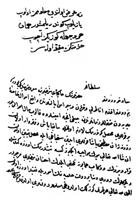

Belge 13: Vâlide Sultan Kösem’e veziriâzam tarafından gönderilen ‘arz
Belge 13
“Sa’âdetlü ve devletlü sultanım hazretlerinin hâkipây-i şerîflerine ma’rûz-i bendegî budur ki:
Benim devletlü efendim, Anadolu ve Karaman ve Sivas eyâletlerinde vâki’ emvâl-i hâssa-i mîrîyeden hidmetlüler zamanlarından hayli akça emînlerde kalup mâl ahvâli bilür bir kulları muhassıl göndermek lâzım olmağla sâbıkâ baş-defterdâr olan Zurnâzen Mustafa Paşa kulları Aydın sancağı ile muhassıl ta’yîn olunup inşallâhu ta’âlâ büyük mevâcibe iki yüz kîse yetiştirmek üzere gide, şöyle karar virdük ve rikâb-i hümâyûna telhîs eyledik, ihsân-i şerîfleri mercûdur ve bölüklerin devri vesâyir devlet-i ‘aliyyenin umûriyle takayyüd üzere olup el-hamdülillâhi ta’âlâ her taraf güzellik olduğı ma’lûm-i devletleri oldukda fermân sultanımındır.”
H. H. Kösem Sultan’ın emri:
“Ne ‘arz olundu, ma’lûmumuz olub yazılup gönderilmiştir; hemân her vechle gözünüz açub hidmetinize mukayyed olasız.”
Yorum:
1. Anadolu, Karaman ve Sivas eyâletlerindeki devlet hazinesine ait bazı gelirlerden önemli miktarda para emînler elinde kalmış, bu gelirleri toplamak üzere mâliye işlerinde geniş bilgisi olan eski defterdâr Zurnâzen Mustafa Paşa seçilmiş; kendisi Aydın sancakbeyi tayin edilip muhassıl sıfatıyla emînlerden parayı tahsîl etmek üzere gönderilmiştir. Kullara Büyük Mevâcib için acele iki yüz kîse (20 milyon akça) beklenmektedir. Dîvân’da bu karara varılmıştır. Bu hususta telhîste Kösem’den izninizi rica ederiz (‘arz olunmuştur) deniyor. Veziriâzam, genel durumun iyi olduğu (güzellik), kulların mevâcib dolayısıyla bir kargaşa çıkarmadıklarını bildirmeyi gerekli görmüş.
Kösem emirlerini Arslanım diye andığı küçük pâdişah adına yapmaktadır. Yazıda bu kayıt yoktur, belge, IV. Murad’ın doğrudan devletin başına geçtiği bir döneme ait olabilir.38
2. Bu belgede, vaktiyle sipahilerin hizmet adı ile vergi topladıklarını, fakat IV. Murad’ın 1632’de tam iktidarı ele aldığı zamanda onların yolsuzluklarına son vermek için, onların hizmetlerini kaldırdığını biliyoruz. Sipahiler zamanında bazı eyâletlerde emînlerin elinde tahsîl edilmiş vergiler kalmıştır. İşte bu gelirlerin tahsîli için şimdi Zurnâzen Mustafa Paşa atanmış bulunuyor. Bu bilgiler dolayısıyla belgenin 1632 tarihine ait olması gerekir.
38 Zurnâzen Mustafa Paşa 1653’te yeniden baş-defterdar oldu: İ H. Danişmend, İzahlı Osmanlı Tarihi Kronolojisi, III, 418.